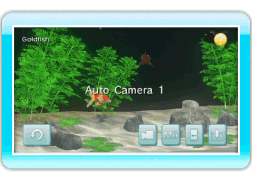

13 |
Camera |
 |
|
Point at on the Aquarium Screen and press
 to change the camera and view the aquarium from another angle. to change the camera and view the aquarium from another angle.Press

There are five camera types. Point at and press
to change between them.
Note: If the Aquarium Screen is left idle for ten minutes, the camera will automatically change to Auto Camera 1. The camera will not change when focused on a fish or a Mii (see “14. Swimming with a Mii”).
|
 to reset the camera.
to reset the camera. |
 |
 |